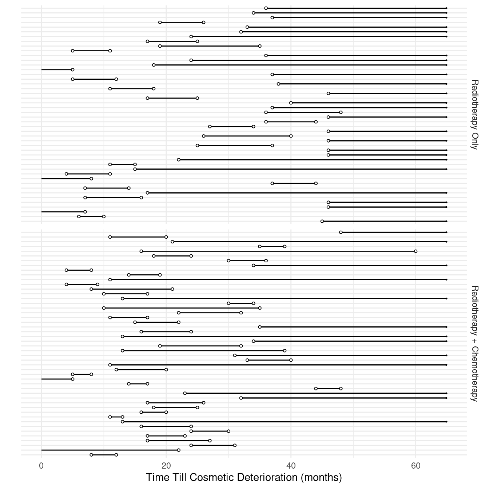
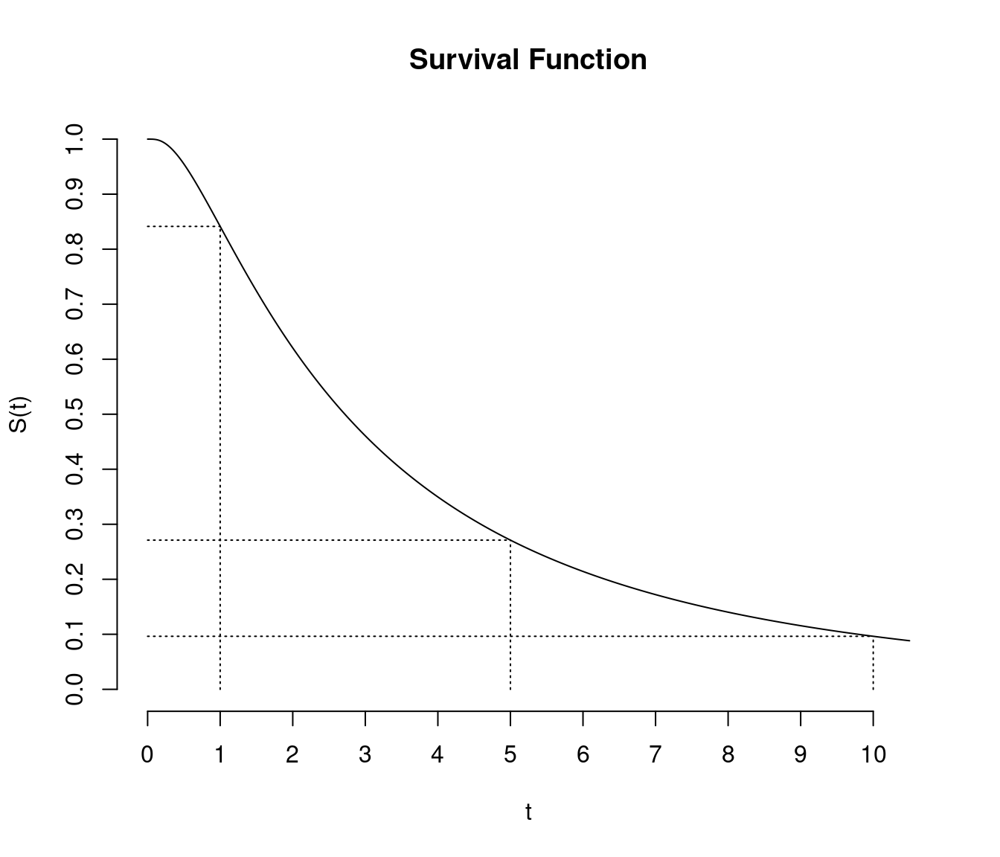
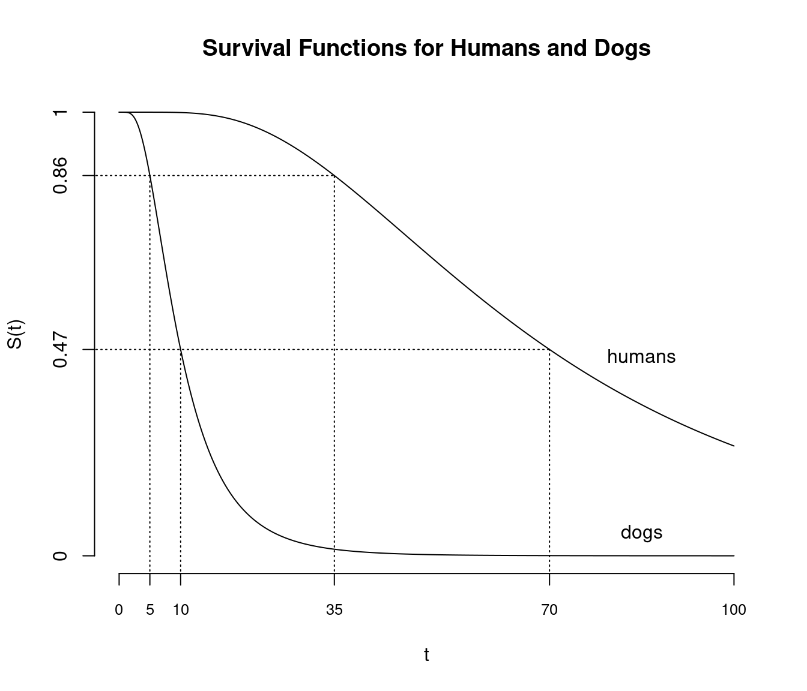
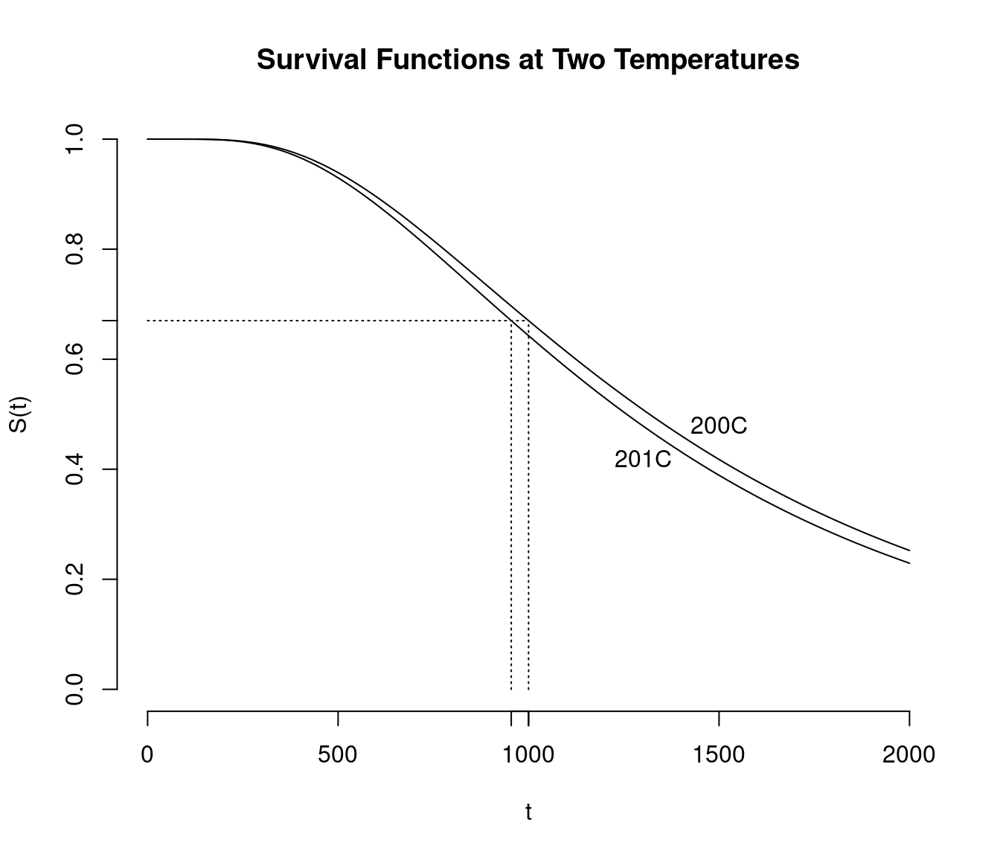
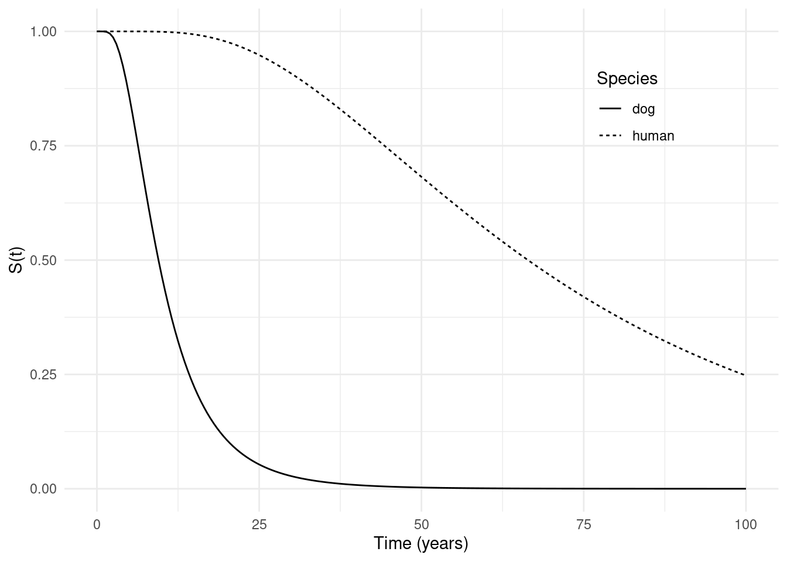
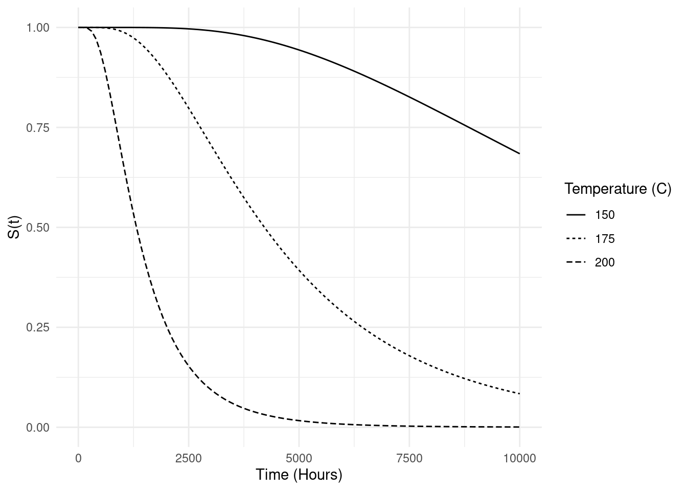
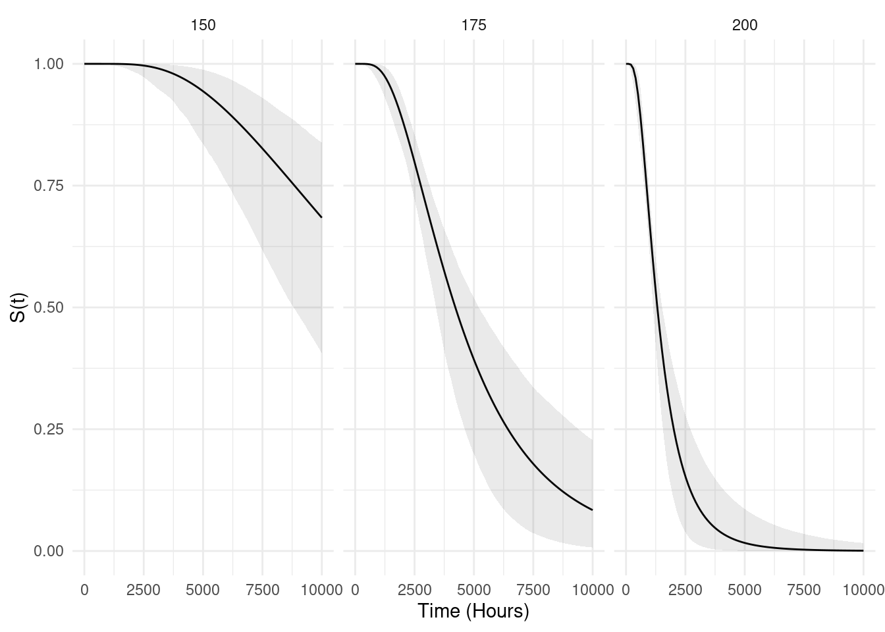

You can also download a PDF copy of this lecture.
Without much loss of generality we will limit the discussion here to right-censoring. We define an indicator variable \(D_i\) such that \[ D_i = \begin{cases} 1, & \text{if the $i$-th observation is not censored}, \\ 0, & \text{if the $i$-th observation is censored}. \end{cases} \] The variable \(D_i\) can be viewed as another response variable which depends on the actual time to event, \(T_i\), as well as whatever is responsible for the censoring. In what follows we will let \(t_i\) and \(d_i\) denote observed values of \(T_i\) and \(D_i\) respectively.
Let \(t_i\) be the actual time-till-event if \(d_i = 1\), and the lower-bound on the time-till-event if \(d_i = 0\) so that the actual time-till-event is greater than or equal to \(t_i\). Under certain assumptions about how censoring occurs, the likelihood function is \[ L = \prod_{i=1}^n f(t_i)^{d_i}P(T_i \ge t_i)^{1-d_i}. \] where \(f(t_i)\) is the probability density function of \(T_i\), and \(P(T_i \ge t_i)\) is the probability that \(T_i\) is at least \(t_i\) (this is also called the survival function). Note that \[ f(t_i)^{d_i}P(T_i \ge t_i)^{1-d_i} = \begin{cases} f(t_i), & \text{if $d_i = 1$ (i.e., not censored)}, \\ P(T_i \ge t_i), & \text{if $d_i = 0$ (i.e., censored)}, \end{cases} \] so the indicator variable \(d_i\) simply selects the appropriate term for computing the likelihood of an observation depending on whether or not it was censored.
SurvFor right-censoring, the response variable can be specified
as Surv(t,d) where t is (a) the actual time to
event if there is no censoring or (b) the lower bound on time to event
if the observation is right-censored, and d is either an
indicator variable (i.e., 0 or 1) or a logical
variable (i.e., FALSE or TRUE) where we have
d = 1 or d = TRUE if the observation is
not censored.
Example: Consider an AFT model for the
leukemia data.
library(survival) # for leukemia and survreg
head(leukemia) # status=1 if remission ended at that time, status=0 if right-censored time status x
1 9 1 Maintained
2 13 1 Maintained
3 13 0 Maintained
4 18 1 Maintained
5 23 1 Maintained
6 28 0 Maintainedm <- survreg(Surv(time, status) ~ x, dist = "lognormal", data = leukemia)
summary(m)$table Value Std. Error z p
(Intercept) 3.5789 0.2847 12.5712 3.039e-36
xNonmaintained -0.7245 0.3803 -1.9049 5.679e-02
Log(scale) -0.1454 0.1695 -0.8576 3.911e-01Alternatively suppose we had a variable censored that
told us if the observation was censored or not.
leukemia$censored <- factor(leukemia$status, labels = c("yes","no"))
head(leukemia) time status x censored
1 9 1 Maintained no
2 13 1 Maintained no
3 13 0 Maintained yes
4 18 1 Maintained no
5 23 1 Maintained no
6 28 0 Maintained yesThen we specify the censoring as follows.
m <- survreg(Surv(time, censored == "no") ~ x, dist = "lognormal", data = leukemia)
summary(m)$table Value Std. Error z p
(Intercept) 3.5789 0.2847 12.5712 3.039e-36
xNonmaintained -0.7245 0.3803 -1.9049 5.679e-02
Log(scale) -0.1454 0.1695 -0.8576 3.911e-01It is useful to note that we can see how Surv codes the
response variable for censoring. This is useful if you want to verify
that you have used Surv correctly.
leukemia$ysurv <- Surv(leukemia$time, leukemia$censored == "no")
head(leukemia) time status x censored ysurv
1 9 1 Maintained no 9
2 13 1 Maintained no 13
3 13 0 Maintained yes 13+
4 18 1 Maintained no 18
5 23 1 Maintained no 23
6 28 0 Maintained yes 28+As before, interpretation is facilitated by applying the exponential function to the parameter estimates.
exp(cbind(coef(m),confint(m))) 2.5 % 97.5 %
(Intercept) 35.8327 20.51 62.604
xNonmaintained 0.4846 0.23 1.021leukemia$x <- relevel(leukemia$x, ref = "Nonmaintained")
m <- survreg(Surv(time, status) ~ x, dist = "lognormal", data = leukemia)
summary(m)$table Value Std. Error z p
(Intercept) 2.8544 0.2539 11.2415 2.550e-29
xMaintained 0.7245 0.3803 1.9049 5.679e-02
Log(scale) -0.1454 0.1695 -0.8576 3.911e-01exp(cbind(coef(m),confint(m))) 2.5 % 97.5 %
(Intercept) 17.364 10.5563 28.561
xMaintained 2.064 0.9793 4.349Interval censoring occurs when \(T_i\) is only known to be between two numbers such that \(a < T_i < b\) where \(0 \le a < b \le \infty\). Note that right-censoring is a special case where \(b = \infty\), and left-censoring is a special case where \(a = 0\).
Example: Consider the following data from a study of the time till cosmetic deterioration for breast cancer patients undergoing radiotherapy alone versus radiotherapy and chemotherapy.
library(mable)
head(cosmesis, 10) left right treat
1 45 NA RT
2 6 10 RT
3 0 7 RT
4 46 NA RT
5 46 NA RT
6 7 16 RT
7 17 NA RT
8 7 14 RT
9 37 44 RT
10 0 8 RTNote that these data include left-censoring, interval-censoring, and
right-censoring).

Using the Surv function to specify censoring requires that
lower bounds of 0 and upper bounds of \(\infty\) be replaced with
NA.
cosmesis$left <- ifelse(cosmesis$left == 0, NA, cosmesis$left)
head(cosmesis, 10) left right treat
1 45 NA RT
2 6 10 RT
3 NA 7 RT
4 46 NA RT
5 46 NA RT
6 7 16 RT
7 17 NA RT
8 7 14 RT
9 37 44 RT
10 NA 8 RTtail(cosmesis, 10) left right treat
85 14 19 RCT
86 4 8 RCT
87 34 NA RCT
88 30 36 RCT
89 18 24 RCT
90 16 60 RCT
91 35 39 RCT
92 21 NA RCT
93 11 20 RCT
94 48 NA RCTIt is also useful to note that you can accommodate an observation that is not censored by specifying equal left and right interval endpoints.
We can verify the censoring specification by looking at what
Surv produces.
cosmesis$y <- with(cosmesis, Surv(left, right, type = "interval2"))
head(cosmesis, 10) left right treat y
1 45 NA RT 45+
2 6 10 RT [ 6, 10]
3 NA 7 RT 7-
4 46 NA RT 46+
5 46 NA RT 46+
6 7 16 RT [ 7, 16]
7 17 NA RT 17+
8 7 14 RT [ 7, 14]
9 37 44 RT [37, 44]
10 NA 8 RT 8-Now we can estimate an AFT model.
m <- survreg(Surv(left, right, type = "interval2") ~ treat,
dist = "lognormal", data = cosmesis)
summary(m)$table Value Std. Error z p
(Intercept) 3.5479 0.1542 23.013 3.450e-117
treatRCT -0.4210 0.2032 -2.072 3.827e-02
Log(scale) -0.1254 0.1095 -1.145 2.521e-01Applying the exponential function helps interpret the effect of the treatment.
exp(cbind(coef(m), confint(m))) 2.5 % 97.5 %
(Intercept) 34.7394 25.6800 46.9949
treatRCT 0.6564 0.4408 0.9775Using flexsurvreg produces the same information but in
one output.
library(flexsurv)
m <- flexsurvreg(Surv(left, right, type = "interval2") ~ treat,
dist = "lognormal", data = cosmesis)
print(m)Call:
flexsurvreg(formula = Surv(left, right, type = "interval2") ~
treat, data = cosmesis, dist = "lognormal")
Estimates:
data mean est L95% U95% se exp(est) L95% U95%
meanlog NA 3.5479 3.2457 3.8500 0.1542 NA NA NA
sdlog NA 0.8821 0.7118 1.0933 0.0966 NA NA NA
treatRCT 0.5106 -0.4210 -0.8192 -0.0228 0.2032 0.6564 0.4408 0.9775
N = 94, Events: 0, Censored: 94
Total time at risk: 2089
Log-likelihood = -146.6, df = 3
AIC = 299.2Again, it is sometimes helpful for interpretation to change the reference level when dealing with categorical explanatory varaibles.
cosmesis$treat <- relevel(cosmesis$treat, ref = "RCT")
m <- flexsurvreg(Surv(left, right, type = "interval2") ~ treat,
dist = "lognormal", data = cosmesis)
print(m)Call:
flexsurvreg(formula = Surv(left, right, type = "interval2") ~
treat, data = cosmesis, dist = "lognormal")
Estimates:
data mean est L95% U95% se exp(est) L95% U95%
meanlog NA 3.1269 2.8558 3.3980 0.1383 NA NA NA
sdlog NA 0.8821 0.7118 1.0933 0.0966 NA NA NA
treatRT 0.4894 0.4210 0.0228 0.8192 0.2032 1.5235 1.0230 2.2688
N = 94, Events: 0, Censored: 94
Total time at risk: 2089
Log-likelihood = -146.6, df = 3
AIC = 299.2The survival function is \[ S(t) = P(T \ge t), \] i.e., the probability of a survival time of at least \(t\). It is sometimes defined as \(S(t) = P(T > t)\) rather than \(S(t) = P(T \ge t)\), but if time is modeled as a continuous random variable this distinction does not matter.  Another useful property of survival functions is that the area under the survival curve equals the expected survival time \(E(T_i)\), assuming \(S(0) = 0\) (i.e., no events have happened at time zero) and \(S(\infty) = 1\) (i.e., events eventually do happen).
Technical Explanation: Accelerated failure time models can be interpreted in terms of effects on survival functions. Let \[ T_b = e^{\beta_0}e^{\beta_1 x_{1}}e^{\beta_2 x_{2}} \cdots e^{\beta_k x_{k}}e^{\sigma \epsilon}, \] and let \(T_a = e^{\beta_1}T_b\) as before where \(T_a\) and \(T_b\) are the survival times when the first explanatory variable assumes values of \(x_a\) and \(x_b\), respectively. The survival functions for \(T_a\) and \(T_b\) are then \[ S_a(t) = P(T_a \ge t) \ \ \text{and} \ \ S_b(t) = P(T_b \ge t), \] respectively. These survival functions are related because \[ S_b(t) = P(T_b \ge t) = P(e^{\beta_1}T_b \ge e^{\beta_1}t) = P(T_a \ge e^{\beta_1}t) = S_a(e^{\beta_1}t). \] That is, \(S_b(t) = S_a(e^{\beta_1}t)\) and also \(S_b(t/e^{\beta_1}) = S_a(t)\). So we can say the following.
The probability of survival past \(t\) at \(x_b\) equals the probability of survival past \(e^{\beta_1}t\) at \(x_a\).
The probability of survival past \(t\) at \(x_a\) equals the probability of survival past \(t/e^{\beta_1}\) at \(x_b\).
It can also be shown that we can “order” the survival functions/probabilities from an AFT model because \[\begin{align*} \beta_j > 0 \Leftrightarrow e^{\beta_j} > 1 \Leftrightarrow S_b(t) < S_a(t), \\ \beta_j < 0 \Leftrightarrow e^{\beta_j} < 1 \Leftrightarrow S_b(t) > S_a(t). \end{align*}\] Note that with an AFT model the survival functions at two different values of an explanatory variable do not cross.
In an AFT model the explanatory variables can be viewed as “compressing” or “stretching” time which has the effect of “horizontally compressing/stretching” the survival function. Assume \(T_i = e^{\beta_0}e^{\beta_1 x_{i1}} \cdots e^{\beta_k x_{ik}}e^{\sigma \epsilon_i}\) and let \(S_i(t)\) be the survival function of \(T_i\). Then \[ S_i(t) = P(T_i \ge t) = P(e^{\beta_0}e^{\beta_1 x_{i1}} \cdots e^{\beta_k x_{ik}}e^{\sigma \epsilon_i} \ge t) = P[e^{\beta_0}e^{\sigma \epsilon_i} \ge t/(e^{\beta_1 x_{i1}} \cdots e^{\beta_k x_{ik}})]. \] If all \(x_{ij} = 0\) then \(T_i = e^{\beta_0}e^{\sigma\epsilon_i}\) with a “baseline” survival function \(S_0(t) = P(e^{\beta_0}e^{\sigma\epsilon_i} \ge t)\). Then \[ S_i(t) = S_0[t/(e^{\beta_1 x_{i1}} \cdots e^{\beta_k x_{ik}})] \ \ \ \text{and} \ \ \ S_i(te^{\beta_1 x_{i1}} \cdots e^{\beta_k x_{ik}}) = S_0(t). \] So the explanatory variables effectively “horizontally” compress or stretch a (hypothetical) baseline survival function. Also in terms of the actual times, if \(T_0 = e^{\beta_0}e^{\sigma\epsilon}\) represents a “baseline” survival time when all \(x_{ij} = 0\), the \[ T_i = e^{\beta_1 x_{i1}} \cdots e^{\beta_k x_{ik}}T_0, \] so that again the values of the explanatory variables have the effect of “stretching” or “compressing” time time scale.
Example: Recall the AFT model for the
lifespan data where the model is \[
\log T_i = \beta_0 + \beta_1 x_i,
\] where \(x_i\) is an indicator
variable such that \(x_i\) = 1 if the
species is human (so \(x_a\) = 1 in the
above discussion), and \(x_i\) = 0 if
the species is dog (so \(x_b\) = 0 in
the above discussion). The estimate of \(\beta_1\) was \(\hat\beta_1\) \(\approx\) 1.946 so that \(e^{\hat\beta_1}\) \(\approx\) 7. The “baseline” survival
function is the survival function for dogs, which we can write as \(S_d(t)\). The survival function for humans
is then \(S_h(7t)\). For example, we
estimate that the probability that a dog lives for 10 or more years
equals the probability that a human will live for 70 or more years
because \(S_d(t) = S_h(7t)\) where
\(t\) = 10. The survival function of a
human is obtained by “stretching” the survival function of a dog by a
factor of 7.
If we re-parameters the model so that \(x_i\) = 1 if the species is dog, then we have that \(\hat\beta_1\) \(\approx\) 1/7, so that the “baseline” survival function is for humans, and we have that \(S_h(t) = S_d(t/7)\). We can also say that we estimate that the probability that a human lives to be 35 or more equals the probability that a dog lives to be 5 or more because \(S_d(t/7) = S_h(t)\) where \(t\) = 35. The survival function of a dog is obtained by “compressing” the survival function of a human by a factor of 1/7. 
Example: Recall the AFT model for the
motors data where the model is \[
\log T_i = \beta_0 + \beta_1 x_i,
\] where \(x_i\) is temperature.
The estimate of \(\beta_1\) was \(\hat\beta_1\) \(\approx\) -0.047 so that \(e^{\hat\beta_1} \approx 0.95\). Thus \(S_{x+1}(0.95t) = S_x(t)\) where the
subscript of \(x\) represents
temperature. Increasing by one degree “compresses” the survival function
by a factor of about 0.95 (i.e., 5%).

Estimating and plotting survival functions is relatively easy using
flexsurvreg objects. Here the summary function
behaves more like predict for other model objects produced
by lm, nls, and glm.
Example: The estimated survival functions for the
AFT model for the lifespan data can be computed/plotted as
follows.
library(trtools) # for lifespan data
m <- flexsurvreg(Surv(years) ~ species, dist = "lognormal", data = lifespan)
d <- data.frame(species = c("dog","human"))
d <- summary(m, newdata = d, t = seq(0, 100, by = 0.5), type = "survival", tidy = TRUE)
head(d) time est lcl ucl species
1 0.0 1.0000 1.0000 1.0000 dog
2 0.5 1.0000 1.0000 1.0000 dog
3 1.0 0.9999 0.9999 0.9999 dog
4 1.5 0.9989 0.9985 0.9993 dog
5 2.0 0.9953 0.9938 0.9964 dog
6 2.5 0.9869 0.9837 0.9896 dogtail(d) time est lcl ucl species
397 97.5 0.2611 0.2405 0.2832 human
398 98.0 0.2583 0.2379 0.2803 human
399 98.5 0.2556 0.2352 0.2775 human
400 99.0 0.2529 0.2325 0.2747 human
401 99.5 0.2502 0.2299 0.2720 human
402 100.0 0.2475 0.2274 0.2692 humanp <- ggplot(d, aes(x = time, y = est)) +
geom_line(aes(linetype = species)) +
labs(x = "Time (years)", y = "S(t)", linetype = "Species") +
theme_minimal() + theme(legend.position = c(0.8,0.8))
plot(p)
Example: Survival functions at different
temperatures based on the AFT model for the motors data can
be computed/plotted as follows.
library(MASS) # for motors data frame
m <- flexsurvreg(Surv(time, cens) ~ temp, dist = "lognormal", data = motors)
d <- data.frame(temp = c(150,175,200))
d <- summary(m, newdata = d, t = seq(0, 10000, length = 100),
type = "survival", tidy = TRUE)
p <- ggplot(d, aes(x = time, y = est, linetype = factor(temp))) +
geom_line() + theme_minimal() +
labs(x = "Time (Hours)", y = "S(t)", linetype = "Temperature (C)")
plot(p)
p <- ggplot(d, aes(x = time, y = est)) +
geom_line() + facet_wrap(~ temp, nrow = 1) +
geom_ribbon(aes(ymin = lcl, ymax = ucl), alpha = 0.1) +
labs(x = "Time (Hours)", y = "S(t)") + theme_minimal()
plot(p)